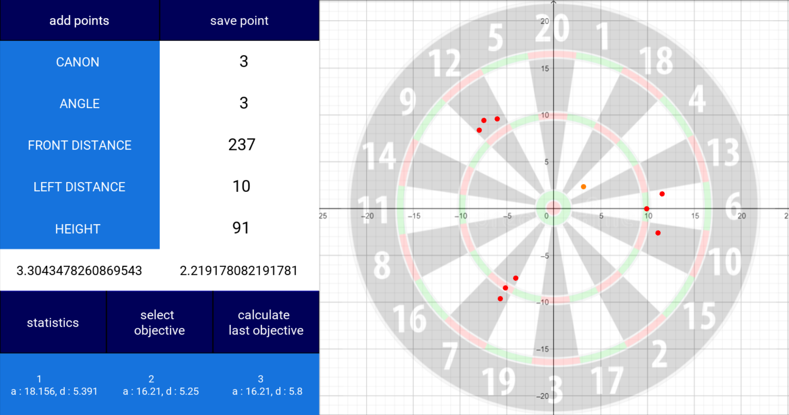
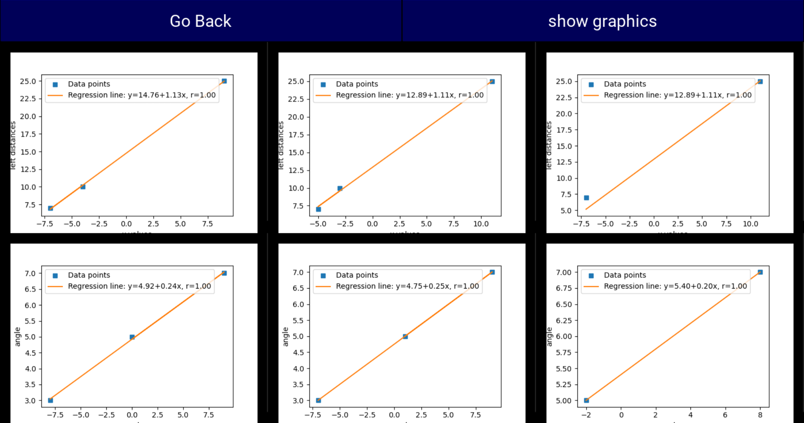

Introduction
For now it has already been 1 year that I am thinking and working on this project. I first figured out
what was the best throwing system. Then I made some prototypes and the main strategy that I used therefore
was Trial and Error. The main objective is still the same, namely to beat my relatives! To do that some
problems needed to be fixed…
In this article I will write about my Python Kivy app that uses previous shots to predict the best angle and distance needed to shoot in the right given target using regression lines. I will also write about the extra temperature and humidity sensors that I installed to calculate the distance of the ultrasonic sensors more accurately. I also fixed some code of the mpu6050 accelerometer and gyroscope to get smoother gradients.

In this article I will write about my Python Kivy app that uses previous shots to predict the best angle and distance needed to shoot in the right given target using regression lines. I will also write about the extra temperature and humidity sensors that I installed to calculate the distance of the ultrasonic sensors more accurately. I also fixed some code of the mpu6050 accelerometer and gyroscope to get smoother gradients.
Quick recap of prototype V
One of the problems that I had with MK.V was that I could not be very accurate in the sense that I couldn’t
aim very well. I needed several chances to figure out which angle and distance I needed to shoot in the right
target. The more shots I did, the better I knew what was going to happen with the dart. This is simply because
each new configuration of the robot and its reference points makes the previous data that I kept in mind
unexploitable.
The way I could predict the results is actually straightforward. Imagine I shoot one time in the (x: center, y:bottom) position with an angle of 3 and a distance of 20. Imagine now I shoot one more time but now in the (x: center, y: top) position with an angle of 7 and a distance of 20. Then I know that if I want to shoot in the middle, I will have to shoot with an angle of 5 (average of 3 and 7) and a distance of 20 (because the other shots were already in the x:center position).
Now with 2 points it doesn’t work very well, but thankfully this method works better and better once we start working with more and more data. However my brain couldn’t handle it once there were more than 10 shots because of 2 reasons. The first one is that there are 3 cannons on my robot. Each of them has specific characteristics because the elastics and friction are not the same. This means for all the cannons there is a different angle and cannon that shoots in the middle. The other reason is that sometimes the robot can encounter more or less frixion in the cannon, which means that the shots are not even all the same. So you can have bayes that are difficult to eliminate using your brain.
The way I could predict the results is actually straightforward. Imagine I shoot one time in the (x: center, y:bottom) position with an angle of 3 and a distance of 20. Imagine now I shoot one more time but now in the (x: center, y: top) position with an angle of 7 and a distance of 20. Then I know that if I want to shoot in the middle, I will have to shoot with an angle of 5 (average of 3 and 7) and a distance of 20 (because the other shots were already in the x:center position).
Now with 2 points it doesn’t work very well, but thankfully this method works better and better once we start working with more and more data. However my brain couldn’t handle it once there were more than 10 shots because of 2 reasons. The first one is that there are 3 cannons on my robot. Each of them has specific characteristics because the elastics and friction are not the same. This means for all the cannons there is a different angle and cannon that shoots in the middle. The other reason is that sometimes the robot can encounter more or less frixion in the cannon, which means that the shots are not even all the same. So you can have bayes that are difficult to eliminate using your brain.
Developing the python kivy app
Thankfully I am living in the 21 century. My brain can’t handle all this data, but a computer can! I just
had to code the right software to do it. As a programming language, I decided to use Python for the logic
and the Kivy framework for the graphics. Like the robot, I made the code step by step. First by learning
all the tools that I would use like Matplotlib for the regression lines and then by gradually making the
code more and more complex.
The app is divided into 2 pages. The first one is the shouting part and the second one is the statistical part. The first thing that I have to do is to calibrate the robot. Therefore I shoot randomly a couple of times (>6) with different angles and distances. I can then press on the “statistics” that opens the other page with the results of the calibration shots with the regression lines. With some calculation you can find the formula of the regression line and with that you can find the angle and distance needed to shoot in a specific target. Therefore you just have to go back to the shooting page, select an objective and press the calculate button. You can then also add this point to the calibration shots, this means actually that the robot is getting better and better by each shot, a bit like machine learning. But I won’t consider this as Artificial Intelligence because it’s just pure regression lines!
https://github.com/getgetstechno/darts-robot/tree/main/dartStatsMK8
You can find the entire arduino code on my github account :
https://github.com/getgetstechno/darts-robot/blob/main/MK11/MK11.ino
In the code you can also see that I changed some parameters concerning the gyroscope and the ultrasonic sensors. This is due to the fact that in the previous prototypes I had some problems making sure the robot could stabilize at the right angle and distance given. Because the sensors had to be very precise, they sometimes made miscalculations and ended up with different values that were not expected. I solved it by making averages. Instead of taking one value, I now take 5 of them in a short lap and add them up to finally divide the addition by 5.
For the gyroscope I also completely changed the way it works. Back then the problem was that the sensor auto-calibrated itself once the power was on. So each time I power it up I had to make sure the cannons were on their lowest place. The other code also used a streng library with a lot of calibration and setting that had to be done manually. I decided to go for a more simple option using the library.
With this I spare more than 50 lines of code.
For now the robot seems to work very well. I will make another article where I deep dive into the statistical analysis of my robot to prove that my robot is better than my relatives. Here are some videos and pictures of the robot when shooting.

Last part

The app is divided into 2 pages. The first one is the shouting part and the second one is the statistical part. The first thing that I have to do is to calibrate the robot. Therefore I shoot randomly a couple of times (>6) with different angles and distances. I can then press on the “statistics” that opens the other page with the results of the calibration shots with the regression lines. With some calculation you can find the formula of the regression line and with that you can find the angle and distance needed to shoot in a specific target. Therefore you just have to go back to the shooting page, select an objective and press the calculate button. You can then also add this point to the calibration shots, this means actually that the robot is getting better and better by each shot, a bit like machine learning. But I won’t consider this as Artificial Intelligence because it’s just pure regression lines!

The entire code of the app can be found on github using the following link :
https://github.com/getgetstechno/darts-robot/tree/main/dartStatsMK8
other problems
Other than that, I also added a temperature and humidity sensor. This is important because it can influence the speed of the ultrasonic waves and so the distance that they traveled. You can for sure find more information about this on the internet. I decided to use the DHT22 type of sensor more precisely the AM2302 sensor, that works great.You can find the entire arduino code on my github account :
https://github.com/getgetstechno/darts-robot/blob/main/MK11/MK11.ino
In the code you can also see that I changed some parameters concerning the gyroscope and the ultrasonic sensors. This is due to the fact that in the previous prototypes I had some problems making sure the robot could stabilize at the right angle and distance given. Because the sensors had to be very precise, they sometimes made miscalculations and ended up with different values that were not expected. I solved it by making averages. Instead of taking one value, I now take 5 of them in a short lap and add them up to finally divide the addition by 5.
For the gyroscope I also completely changed the way it works. Back then the problem was that the sensor auto-calibrated itself once the power was on. So each time I power it up I had to make sure the cannons were on their lowest place. The other code also used a streng library with a lot of calibration and setting that had to be done manually. I decided to go for a more simple option using the
For now the robot seems to work very well. I will make another article where I deep dive into the statistical analysis of my robot to prove that my robot is better than my relatives. Here are some videos and pictures of the robot when shooting.